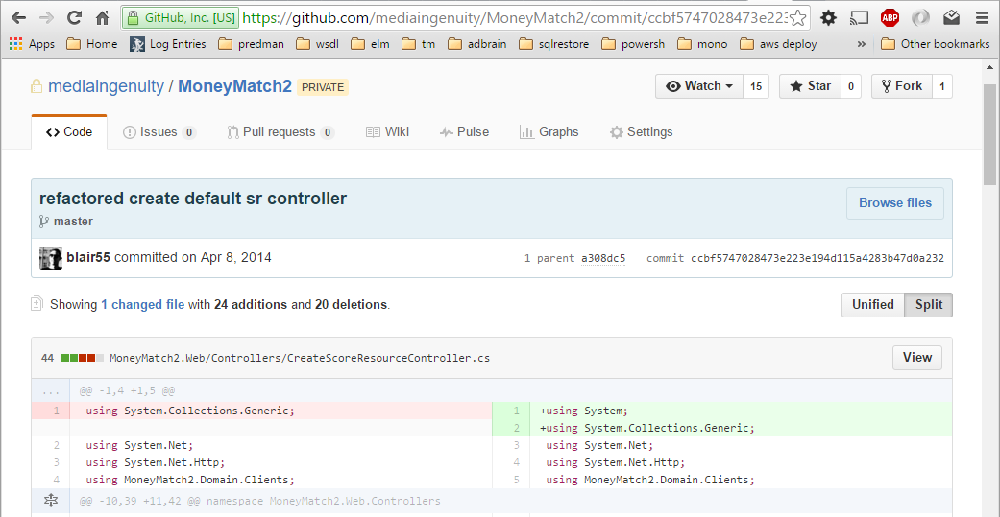
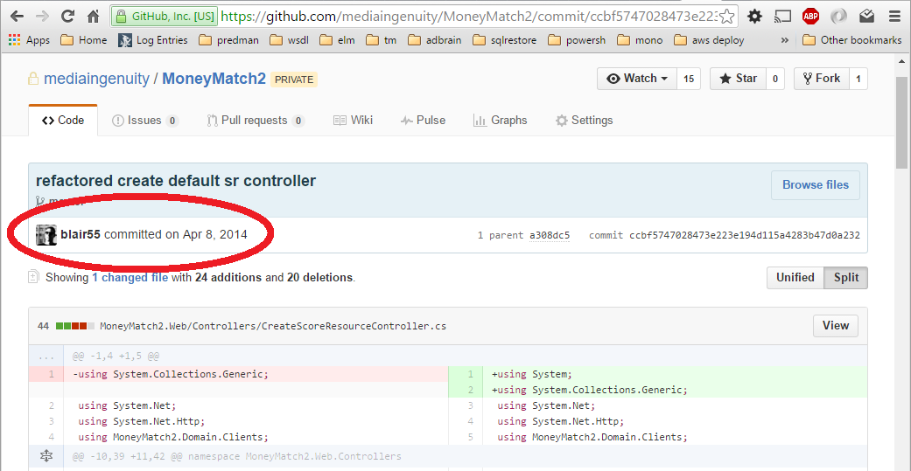

Simplest answer is usually correct
Cock-up before conspiracy
Any code of your own that you haven't looked at for six or more months might as well have been written by someone else
What idiot wrote this?

What idiot wrote this?

Organisations which design systems ... are constrained to produce designs which are copies of the organisation
work expands so as to fill the time available for its completion
It always takes longer than you expect, even when you take into account Hofstadter's Law
I would have written a shorter letter, but I did not have the time.
Pascal
Brevity is the soul of wit
Shakespeare
cock-up before conspiracy
small teams FTW
don't plan too far ahead
be careful of confidence
recognise your own experience